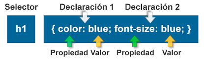

En los selectores, la declaracion indica que hay que hacer y el selector indica a que elementos hay que hacerlo. A un mismo elemento HTML se le pueden aplicar varias reglas CSS y cada regla CSS puede aplicarse a un numero ilimitado de elementos. En otras palabras, una misma regla puede aplicarse sobre varios selectores y un mismo selector se puede utilizar en varias reglas. El estandar de CSS muchos tipos diferentes de selectores, que permiten seleccionar de forma muy precisa elementos individuales o conjuntos de elementos dentro de una web. No obstante, la mayorıa de paginas de los sitios web se pueden disenar utilizando solamente los selectores basicos.
tomado de: Cabrera, L. V. (2012). Introducción a CSS. Obtenido de https://www. cs. us. es/blogs/bd2013/files/2013/09/IntroducciónCSS. pdf.

imagen tomada de: https://www.exasoluciones.com/inicio/tutoriales/css/sintaxis-y-selectores-css